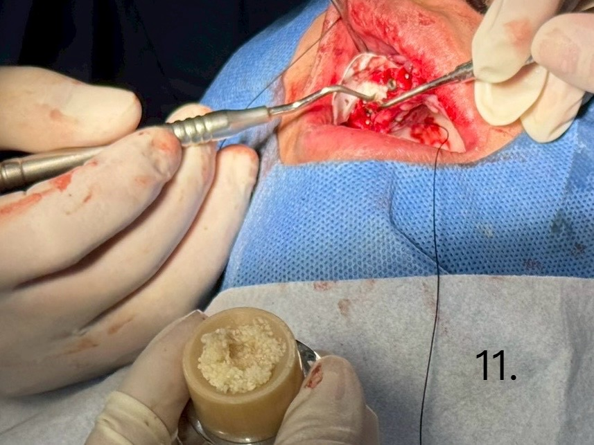
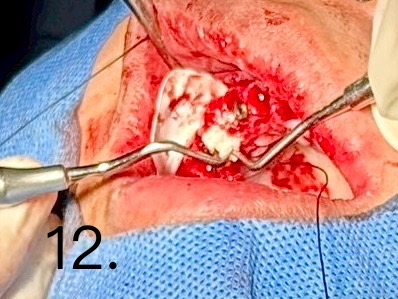
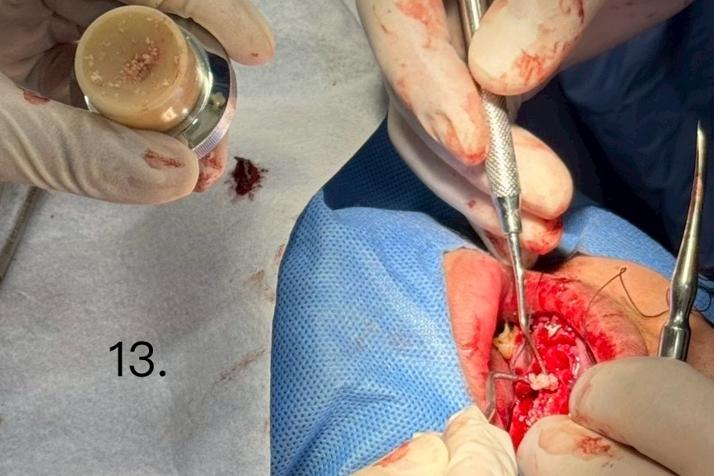
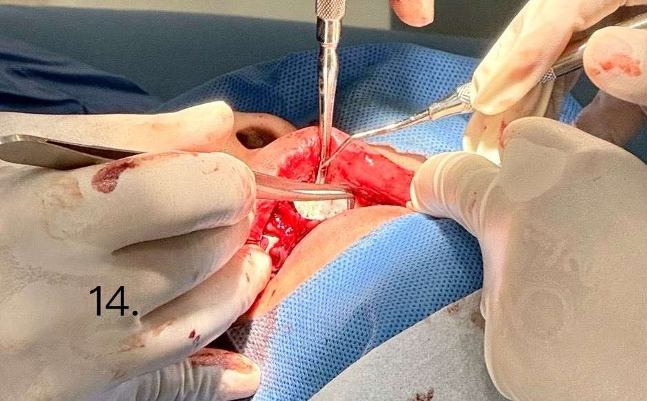
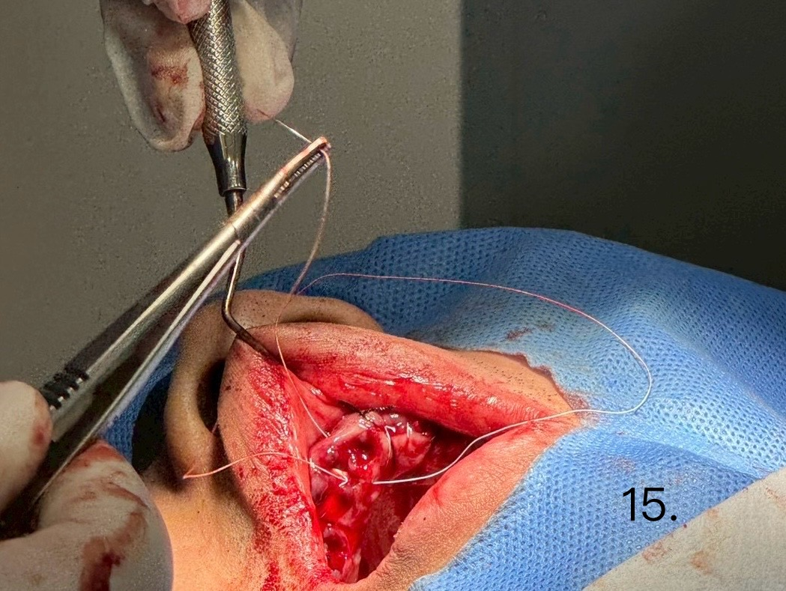
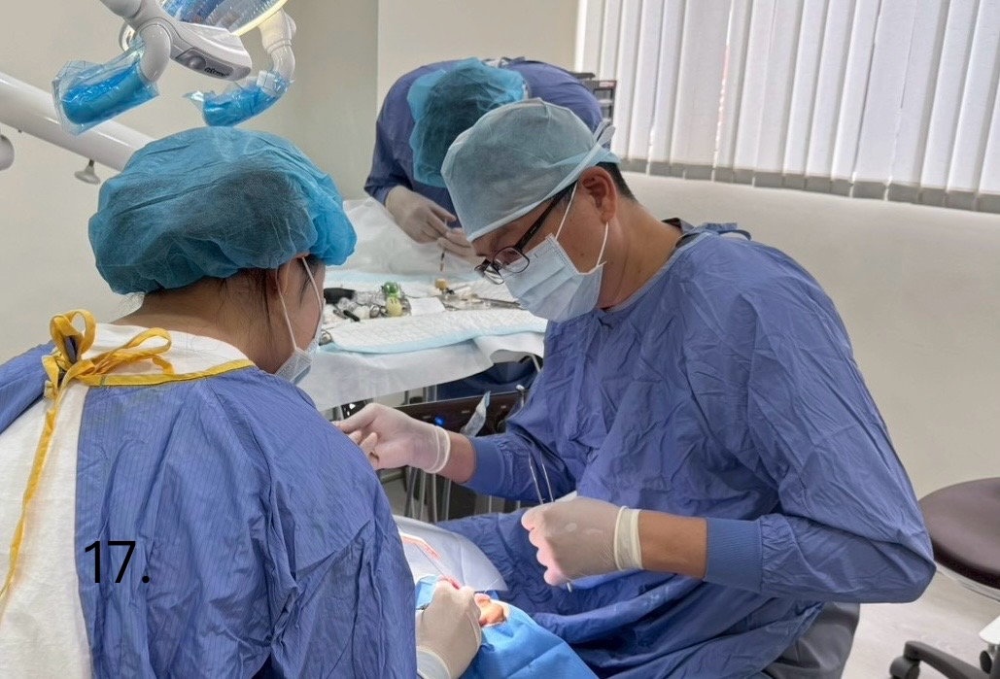
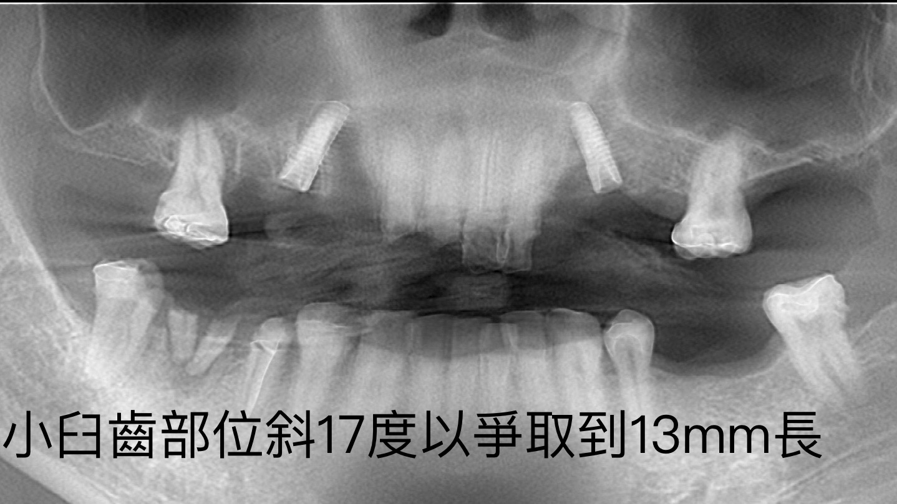
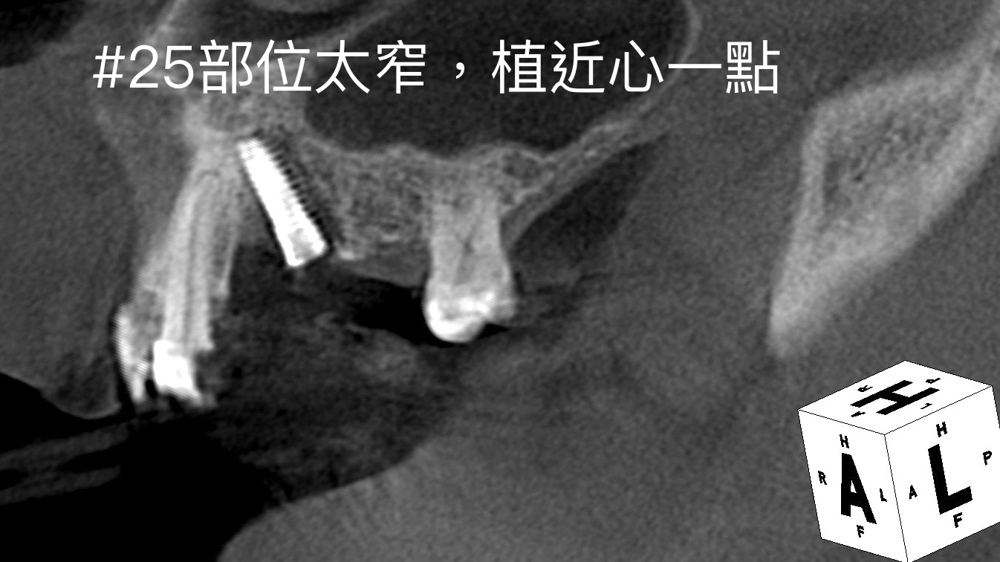
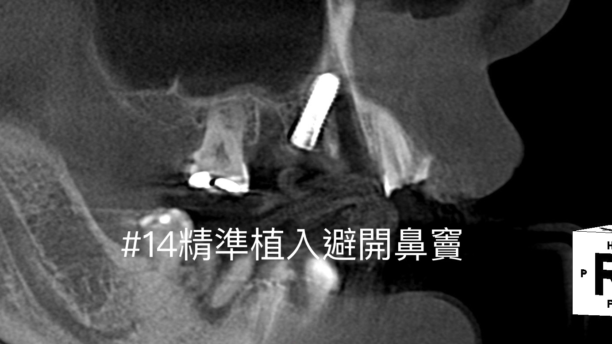
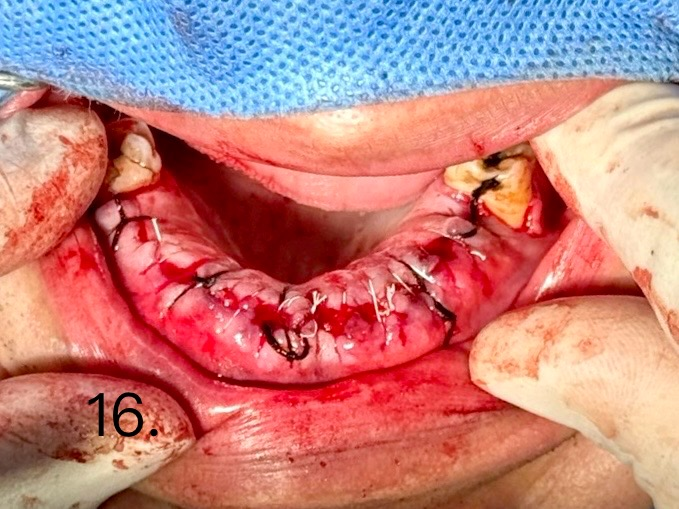

上顎all on 4（二）
3D數位植牙｜案例分享
📋 案例概覽
Case Report (Part II): Maxillary All-on-4 Immediate Reconstruction & Radiographic Evaluation
1. Surgical Step Details (Figures 11–17)
圖 11–13 (Figure 11, 12, 13)：骨移植與微創填補技術（Bone Grafting & Socket Grafting）
使用顆粒狀骨粉（Bone graft material）進行缺損處填補。
針對拔牙窩缺損（Extraction sockets）與植體周圍之跳躍間隙（Jump distance）進行精準填充，確保軟硬組織足夠支持與未來的唇側豐隆度。
圖 14 (Figure 14)：屏障膜固定與覆蓋（Membrane Placement & Fixation）
將切割修整適當之膠原蛋白屏障膜（Collagen membrane）平整覆蓋於骨移植區上方。
阻隔上皮細胞過度長入，達成引導骨再生（GBR）所需之空間維持與組織隔離作用。
圖 15–16 (Figure 15, 16)：創口對合與無張力縫合（Flap Closure & Tension-free Suturing）
進行黏膜骨膜瓣（Mucoperiosteal flap）之減張處理，確保創口得以達到良好的第一期癒合（Primary closure）。
使用縫線進行間斷縫合（Interrupted sutures），完整包覆補骨材料與屏障膜，維持術後創口穩定性。
圖 17 (Figure 17)：手術團隊臨床實作（Surgical Operation）
由醫師與手術團隊於無菌環境下進行嚴密之外科操作與創口縫合止血。
2. Post-operative Radiographic Assessment (Figures 18–20)
圖 18 (Figure 18)：全景 X 光片檢查（Post-op Panoramic Radiograph）
術後影像顯示植体位置與角度良好。
關鍵術後發現： 小臼齒部位植體特別採取 傾斜 17 度 角度植入，成功避開解剖限制並爭取到 13 mm 之長度，為 All-on-4 機構提供極佳之初期穩定度與力學支持。
圖 19 (Figure 19)：CBCT 切片檢查 — 左側小臼齒區（#25 Location CBCT）
影像評估： CBCT 顯示 #25 骨頭部位極窄，故策略性將植體偏向近心側（Mesial aspect）植入，避開骨質不足區域，成功取得充份之骨頭包覆。
圖 20 (Figure 20)：CBCT 切片檢查 — 右側小臼齒區（#14 Location CBCT）
影像評估： #14 位置植體精準植入，上方完美避開上顎竇（Maxillary sinus）及鼻竇（Nasal cavity）底部，達成最佳之骨質錨定（Cortical anchorage）。
• 3. Overall Clinical Conclusion
Strategic Implant Angulation: 藉由小臼齒區 17 度傾斜植入，成功避開解剖構造（上顎竇與鼻竇），並爭取到 13 mm 長度之植體以確保初級穩定度。
Defect & Narrow Ridge Management: 針對 #25 骨脊極窄之問題，彈性調整植入位置偏近心側，並結合精準 GBR（骨粉＋屏障膜）填補技術，確保植體周圍硬組織之長期穩定。
Primary Closure & Rehabilitation: 無張力縫合維持術後創口封閉，為 All-on-4 即刻加載與後續全口重建提供良好的組織基礎。
🔑 治療要點
- All-on-4 全口重建技術 — 4 根植體支撐全顎假牙
- 骨移植與微創填補技術精準修復拔牙窩缺損
- CBCT 術後影像評估確認植體避開上顎竇與鼻竇
- 17 度策略性植體傾斜角度爭取 13mm 長度與最佳穩定度
📷 臨床照片紀錄










本案例僅為醫療知識分享與學術討論用途，每位患者的口腔狀況與治療方案皆不相同。實際治療計畫需經由專業醫師進行完整評估後制定。本頁面已去除所有患者個人識別資訊，保護患者隱私。